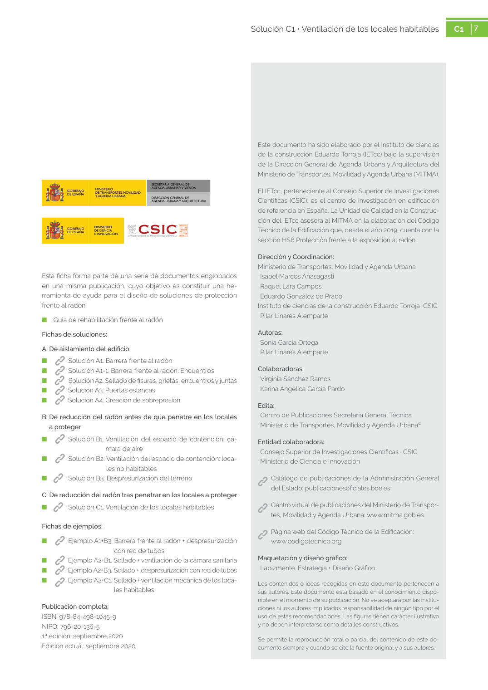

GUIA · 1 extractor 2 shunt colectivo · versión sin-fecha · capa guia
Formatos: JSON compacto · Markdown · PDF fuente
Ámbito del documento · texto del ámbito · documento y tablas
Tipo: tablas, figuras · nivel 1 · sección estimada: 1 extractor 2 shunt colectivo · padre:
1 extractor 2 shunt colectivo 2 shunt colectivo 1 2 2 1 2 7 Solución C1 • Ventilación de los locales habitables C1 7 Este documento ha sido elaborado por el Instituto de ciencias de la construcción Eduardo Torroja (IETcc) bajo la supervisión de la Dirección General de Agenda Urbana y Arquitectura del Ministerio de Transportes, Movilidad y Agenda Urbana (MITMA). El IETcc, perteneciente al Consejo Superior de Investigaciones Científicas (CSIC), es el centro de investigación en edificación de referencia en España. La Unidad de Calidad en la Construc ción del IETcc asesora al MITMA en la elaboración del Código Técnico de la Edificación que, desde el año 2019, cuenta con la

PDF fuente redistribuible: copia fiel enlazada en esta página (SHA256 verificado).